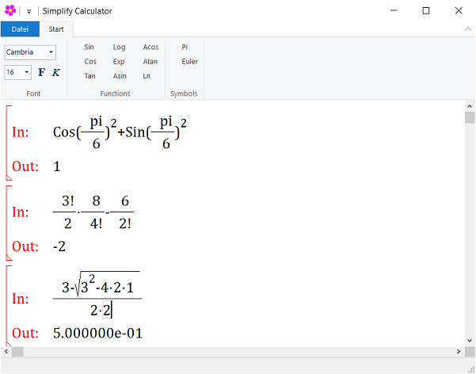

About
The calculator takes mathematical formula as input. The input will be analysed and the result will be showed as output. It has mathematical formula editor. For now we support numerical calculation including Pi and Euler.
Features
- Rich GUI
- Open Source
- Written in C Programming language and used WIN32 API. (So small and compact executable file)
Application main window
Operator Precedence
The following table lists the precedence and associativity of operators. Operators are listed top to bottom, in descending precedence.
| Precedence | Operator | Description | Associativity |
|---|---|---|---|
| 1 | () | Parentheses | Left-to-right |
| 2 | ^ _ | Power, Subscript | right-to-Left |
| 3 | ! | Factorial | Left-to-right |
| 4 | + - | Unary plus and minus | Left-to-right |
| 5 | * / | Multiplication and division | Left-to-right |
| 6 | + - | Addition and subtraction | Left-to-right |
Functions
| Literal | Description |
|---|---|
| Sin | sine |
| Cos | cosine |
| Tan | tangent |
| Asin | arc sine |
| Acos | arc cosine |
| Atan | arc tangent |
| Sqrt | square root |
| Log | common logarithm (base-10 logarithm) |
| Ln | natural logarithm (base-e logarithm) |
| Exp | e raised to the xth power |
How to use
The formula stored in binary tree structure. Tree consist of nodes and leafs connected with each other. Each node has at most two palceholder (left and right). Each palceholder can be node or leaf.
For example the formula:
| Key | Description |
|---|---|
| Left and right Arrow | Cursor navigation |
| Backspace | delete current node or delete character |
| Delete and Shift+Delete | Delete placeholder left or right |
| + - / ^ | Create binary node |
| # $ | Create unary node (minus and plus) |
| () | Create unary node (parentheses) |
| : | Create unary node (sqrt function) |
| ! | Create unary node (factorial) |